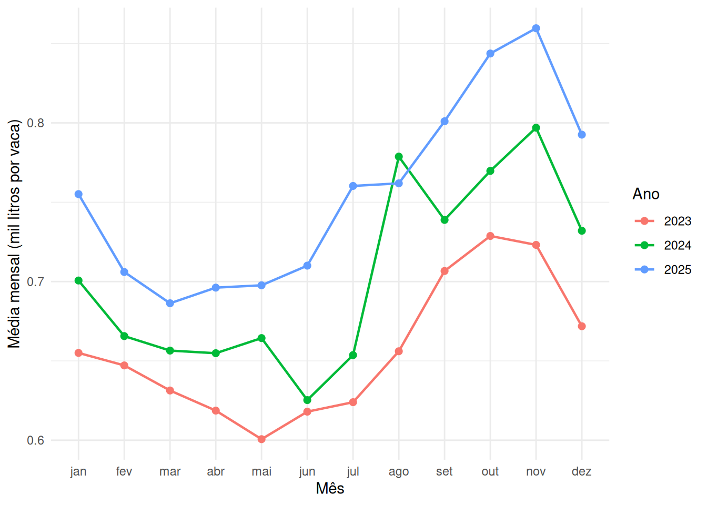
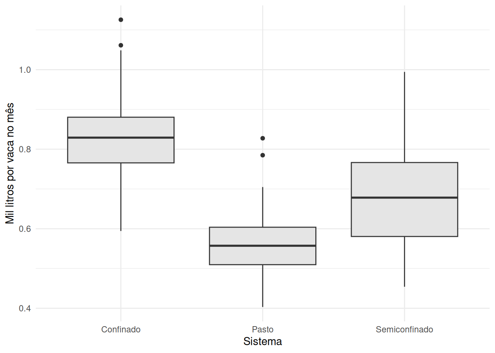

Esta vinheta refaz a análise do trabalho intermediário só com as funções e os dados do pacote. As tabelas usam a função auxiliar abaixo, que formata os números reais com duas casas decimais e vírgula decimal, por meio da formatar_numero() do pacote.
tabela <- function(x, ...) {
alinhamento <- ifelse(vapply(x, is.numeric, logical(1)), "r", "l")
x[] <- lapply(x, function(coluna) {
if (is.double(coluna)) formatar_numero(coluna, 2) else coluna
})
knitr::kable(x, align = alinhamento, ...)
}
# Nome por extenso de cada mês, para o texto
nome_mes <- c(
jan = "janeiro", fev = "fevereiro", mar = "março", abr = "abril",
mai = "maio", jun = "junho", jul = "julho", ago = "agosto",
set = "setembro", out = "outubro", nov = "novembro", dez = "dezembro"
)Os dados
login <- ler_login()
cadastro <- ler_cadastro()
sem_medicao <- achar_sem_medicao(cadastro, ler_anuais())
conferencia <- summary(leite_fazendas)Os dados são simulados, sorteados para o login l4ur419 do GitHub, e tratam do leite entregue pelas fazendas de uma cooperativa em 2023, 2024 e 2025. Os cinco arquivos brutos acompanham o pacote e são encontrados pela caminho_dados(). O cadastro, lido pela ler_cadastro(), tem 11 fazendas, das quais uma não tem medição em ano algum: Fazenda Boa Esperança (código FZ01), encontrada pela achar_sem_medicao().
A tabela arrumada, com uma linha por fazenda, ano e mês, vem pronta no conjunto leite_fazendas, montado pela arrumar_dados(). Ela é da classe leitecoop, cujo print() escreve uma linha de resumo antes da tabela:
leite_fazendas
#> Leite de 10 fazendas em 3 anos (2023 a 2025), com 9 meses sem registro
#> # A tibble: 360 × 9
#> origem ano codigo mes leite nome sistema vacas litros_por_vaca
#> <chr> <int> <chr> <fct> <dbl> <chr> <chr> <dbl> <dbl>
#> 1 leite_2023.csv 2023 FZ02 jan 190. Fazend… Pasto 371 0.512
#> 2 leite_2023.csv 2023 FZ02 fev 182. Fazend… Pasto 371 0.490
#> 3 leite_2023.csv 2023 FZ02 mar 202 Fazend… Pasto 371 0.544
#> 4 leite_2023.csv 2023 FZ02 abr 168 Fazend… Pasto 371 0.453
#> 5 leite_2023.csv 2023 FZ02 mai 164. Fazend… Pasto 371 0.443
#> 6 leite_2023.csv 2023 FZ02 jun 198. Fazend… Pasto 371 0.535
#> 7 leite_2023.csv 2023 FZ02 jul 206. Fazend… Pasto 371 0.554
#> 8 leite_2023.csv 2023 FZ02 ago 226. Fazend… Pasto 371 0.609
#> 9 leite_2023.csv 2023 FZ02 set 220. Fazend… Pasto 371 0.592
#> 10 leite_2023.csv 2023 FZ02 out 224. Fazend… Pasto 371 0.602
#> # ℹ 350 more rowsA medida relativa usada nas comparações, litros_por_vaca, é o leite do mês dividido pelo número de vacas da fazenda. Como o leite está registrado em milhares de litros, a medida relativa está em mil litros por vaca.
O summary() da tabela arrumada é a conferência da leitura contra o LEIA-ME.txt (Tabela 1): em cada ano, o número de fazendas com medição, as linhas da tabela (uma por fazenda e mês), os meses sem registro e a soma dos valores registrados.
tabela(
conferencia,
col.names = c("Ano", "Fazendas", "Linhas", "Meses sem registro",
"Soma (mil litros)")
)| Ano | Fazendas | Linhas | Meses sem registro | Soma (mil litros) |
|---|---|---|---|---|
| 2023 | 10 | 120 | 2 | 18.870,10 |
| 2024 | 10 | 120 | 5 | 19.673,20 |
| 2025 | 10 | 120 | 2 | 21.661,00 |
Meses sem registro. Um mês sem registro foi tratado como dado ausente, e não como produção zero: a falta de registro não indica que a fazenda deixou de produzir. Por isso, ele continua NA na tabela arrumada, e as somas e médias dos resumos ignoram esses meses. A decisão afeta as colunas de total e de média da medida relativa, mas não afeta a contagem de meses com registro, que apenas verifica se o mês foi preenchido. Nos três anos há 9 meses sem registro, e o total registrado é de 60.204,3 mil litros.
Sazonalidade
O plot() da tabela arrumada desenha a média mensal de mil litros por vaca em cada ano (Figura 1).
plot(leite_fazendas)
por_mes <- resumir_mes(leite_fazendas)
maior_mes <- por_mes[which.max(por_mes$media_relativa), ]
menor_mes <- por_mes[which.min(por_mes$media_relativa), ]Com os três anos juntos, pela resumir_mes(), o mês de maior média é novembro, com 0,79 mil litros por vaca, e o de menor média é junho, com 0,65 mil litros por vaca.
Variação entre 2023 e 2025
resumo_anual <- resumir_ano(leite_fazendas)
primeiro <- resumo_anual[1, ]
ultimo <- resumo_anual[nrow(resumo_anual), ]
variacao <- 100 * (ultimo$media_relativa / primeiro$media_relativa - 1)A Tabela 2 resume cada ano, pela resumir_ano(). A média mensal de mil litros por vaca passou de 0,66 em 2023 para 0,76 em 2025, uma variação de 15,0%.
A comparação usa a média da medida relativa, e não o total, porque o total soma apenas os meses registrados: um ano com mais meses sem registro teria total menor sem que a produção tivesse caído. O total também depende do tamanho dos rebanhos. A média da medida relativa considera só os meses registrados e desconta o porte de cada fazenda.
tabela(
resumo_anual,
col.names = c("Ano", "Fazendas", "Meses com registro",
"Meses sem registro", "Total (mil litros)",
"Mil litros por vaca")
)| Ano | Fazendas | Meses com registro | Meses sem registro | Total (mil litros) | Mil litros por vaca |
|---|---|---|---|---|---|
| 2023 | 10 | 118 | 2 | 18.870,10 | 0,66 |
| 2024 | 10 | 115 | 5 | 19.673,20 | 0,70 |
| 2025 | 10 | 118 | 2 | 21.661,00 | 0,76 |
efeito_ano <- variacao_anual(ajustar_modelo(leite_fazendas))O modelo log(litros_por_vaca) ~ ano + mes + sistema, ajustado pela ajustar_modelo(), desconta o mês e o sistema de cada medição. Pela variacao_anual(), a variação anual estimada é de 7,2% ao ano, com intervalo de confiança de 95% de 5,7% a 8,8%.
Diferenças entre categorias
resumo_categoria <- resumir_categoria(leite_fazendas)
maior_sistema <- resumo_categoria[which.max(resumo_categoria$media_relativa), ]
menor_sistema <- resumo_categoria[which.min(resumo_categoria$media_relativa), ]A Figura 2 mostra a distribuição de mil litros por vaca em cada sistema de produção, e a Tabela 3 traz as médias, pela resumir_categoria(). O sistema com a maior média é Confinado (0,83 mil litros por vaca), e o de menor média é Pasto (0,56 mil litros por vaca).
grafico_categorias(leite_fazendas)
tabela(
resumo_categoria,
col.names = c("Sistema", "Fazendas", "Total (mil litros)",
"Mil litros por vaca")
)| Sistema | Fazendas | Total (mil litros) | Mil litros por vaca |
|---|---|---|---|
| Confinado | 4 | 26.280,60 | 0,83 |
| Semiconfinado | 3 | 20.441,80 | 0,68 |
| Pasto | 3 | 13.481,90 | 0,56 |